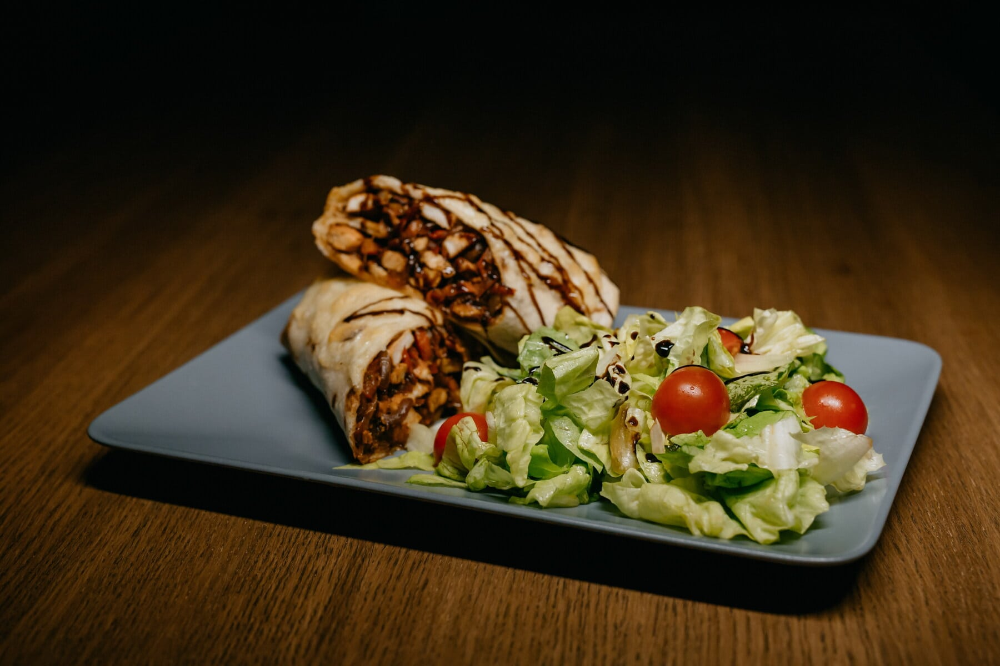

Vegan Burritos

Description
Way better than Moe's! These vegan burritos are easy to make and delicious!
Ingredients
- 2 1/4 cups water
- 1 cup uncooked brown rice
- 1 (10 ounce) can diced tomatoes and green chiles
- 3 teaspoons ground cumin
- 2 teaspoons ground turmeric
- 1 teaspoon chopped fresh basil
- 1 pinch garlic powder, or to taste
- 1 pinch salt and ground black pepper to taste
- 1 pinch seasonsed salt, or to taste
- 2 tablespoons olive oil
- 2 large red potatoes, cubed
- 1 green bell pepper, chopped
- 1 medium onion, chopped
- 1 clove garlic, minced, or to taste
- 1 (15 ounce) can black beans, rinsed and drained
- 6 flour tortillas
- 1 cup fresh spinach, or to taste
- 1 cup chopped romaine lettuce, or to taste
- 1/4 cup salsa, or to taste
Steps
- Preheat the oven to 350 degrees F (175 degrees C). Grease a baking sheet.
- Bring water and brown rice to a boil in a saucepan. Stir in diced tomatoes with chile peppers. Reduce heat to medium-low, cover, and simmer until rice is tender and liquid has been absorbed, about 50 minutes.
- While rice is cooking, mix cumin, turmeric, basil, garlic powder, salt, pepper, and seasoned salt together in a large bowl. Add olive oil. Toss potatoes in the mixture until well coated. Lay potatoes in a single layer on the prepared baking sheet.
- Bake in the preheated oven until fork-tender, 15 to 30 minutes, depending on the size of the cubes, checking halfway through cooking time and flipping over as needed.
- While potatoes are cooking, heat a skillet over medium heat. Saute bell pepper and onion in the hot pan until softened, about 5 minutes. Add garlic and cook for 1 minute. Remove from heat and set aside.
- Heat black beans in a saucepan over medium-low heat until hot, 2 to 3 minutes. Keep warm.
- Meanwhile, heat tortillas in a separate skillet over low heat until warm, 1 to 2 minutes, or according to package instructions.
- Lay out tortillas and fill as desired with cooked rice, beans, potatoes, pepper-onion mixture, spinach, romaine lettuce, and salsa as desired. Wrap up into burritos and serve.